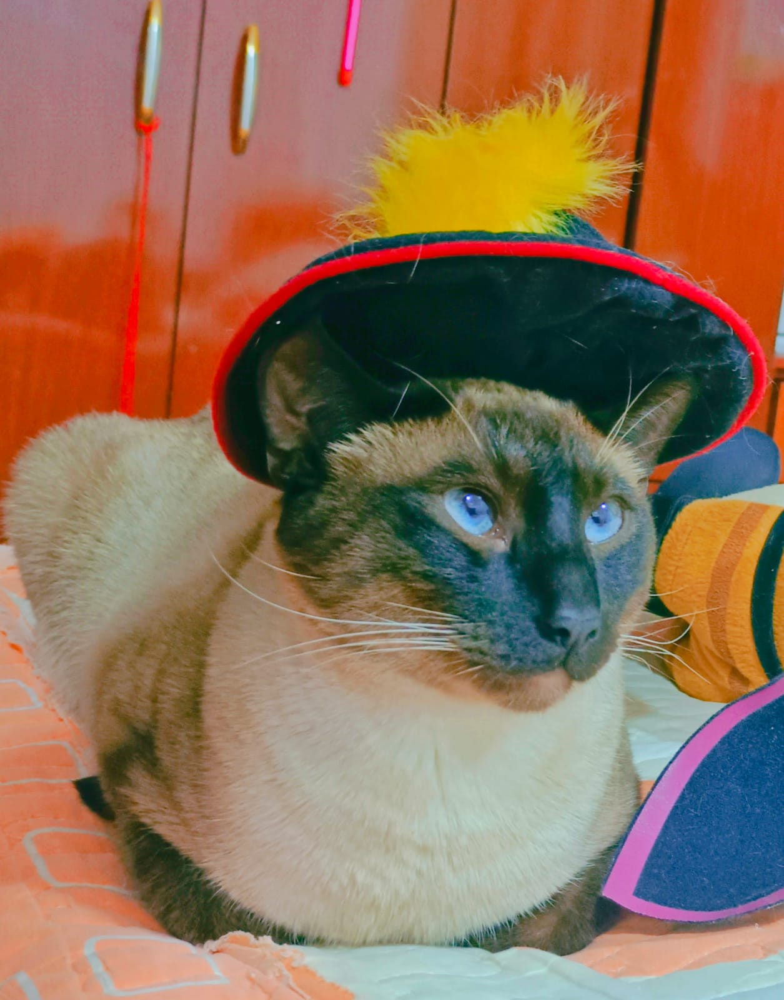

| Quemadín Blue | ||
|---|---|---|
|  | ||
| Información personal | ||
| Nombre de Nacimiento | Quemadín Blue Eriani Huayanay Siam | |
| Nacimiento | 23 de marzo de 2022 (14 meses) Chorrillos, Lima, Perú | |
| Residencia | Huaraz, Áncash, Perú | |
| Familia | ||
| Padres | Milaneso Siam Gatalina Siam | |
| Información profesional | ||
| Ocupación | Fundador de la Alianza FMBK Presidente del sitio web Francesco's Navegator (FrNavg) | |
| Meses activos | Desde agosto 2022 | |
| Patrimonio | S/ 5 | |
Quemadín Blue nació en la noche del 23 de marzo del 2022, era hijo de Milaneso y Gatalina, inicialmente le fue llamado por Stefany Huayanay, Cicci 2. Después de dos meses de su nacimiento, le fue regalado a quien lo adoptaría, el magnate Francesco Adriano Eriani Huayanay.
Francesco, que lo adoptó como su hijo, lo llamo Quemadín Blue, el primer nombre porque parecía quemado y el segundo porque sus ojos eran azules.
Dos meses después llegaría también su hermano, que antes se llamaba Juancito Urigancho, pero que Francesco lo cambió a Kimba Michifus.
Para octubre del 2022 se formalizó ls creación de la empresa Alianza FMBK, que eran las siglas de Francesco-Misifu-Blue-Kimba, y Blue era uno de sus fundadores.
Para el 15 de mayo del 2023, Blue fue nombrado presidente del sitio web FrNavg, que cada día sigue innovando.
En el XX de agosto de 2023, Francesco programó su auto-exilio y lo "subalquiló" a su tía Selina Corín Huayanay Chuquillanqui y con su rencuentro en Lima, donde hay el único aeropuerto verdaderamente internacional del Perú, Blue cambión de nombre a Blue MishelAlexander, Blue en recuerdo de su ex-padre adoptivo, Mishel, por el nombre que le puso a Selina y Alexander, porque sy primo, que se llamaba Alexander, dijo que se le parecía mucho a él, y los nombres Mishel y Alexander, por comodidad de lectura están juntos y se escriben y se leen juntos.